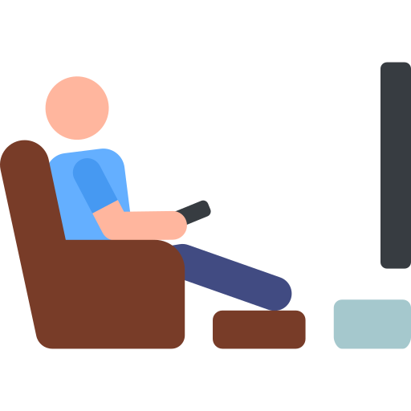
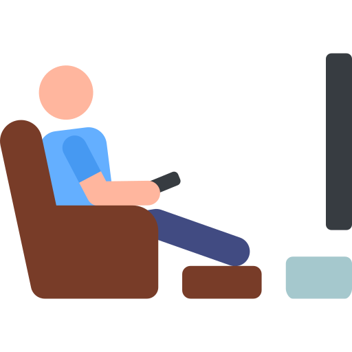

Um Pouco Mais Sobre Mim...
Meu nome é Willian Henrique Ollmann, tenho 34 anos, nasci e moro na cidade de Chapecó, estado de Santa Catarina. Sou filho de Rubens Nestor Ollmann e Elvira Ollmann. Sou casado com a Werlise Fassbinder Ollmann há 5 anos e não temos filhos. Sempre gostei e quis ingressar na área de tecnologia, mas por dificuldades pessoais isso não foi possível até o momento. Por isso, atualmente, estudo Programação WEB no IFPA e cursos do YouTube.
Meus hobbies são cozinhar, praticar musculação, ver filmes ou seriados diversos e escutar músicas dos anos 70, 80 e 90.
 

Adoro o legítimo pão de queijo mineiro (receita caseira). Especial para o lanche da tarde ou jantar, sempre acompanhado de um café fresquinho passado na hora. Quem também gosta, quer experimentar e tem vontade de comer pão de queijo, não tem mais desculpa para não fazê-lo! Esta receita caseira é simplesmente maravilhosa. Arrisque-se!